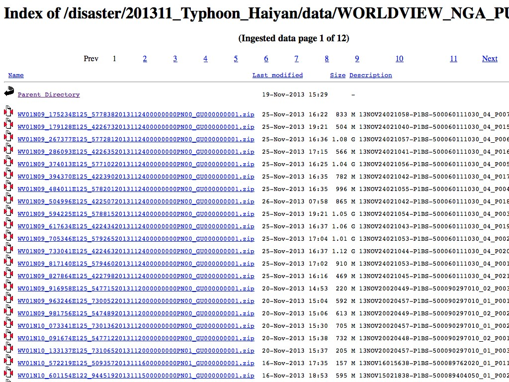

Give me all your data
Chris Herwig @hrwgc
MapBox Satellite
We turn imagery into maps.
Typhoon Haiyan
Key Takeaways
Imagery not released to the public in a systematic manner.
Imagery not released in a timely manner.
Lack of clarity on licensing / acceptable end users / uses by providers and potential users of imagery.
Recommendations
Imagery should be released freely and as quickly as possible after natural disaster occurs.
Licensing for organizations/companies assisting humanitarian relief organizations and government agencies should be the same -- and known by all parties involved.
Timeline
November 7, 2013
"Haiyan is the strongest storm to ever make landfall"
- Jeff Masters, Director of Meteorology at Weather Underground[1]
Haiyan had sustained winds of 190-195 mph when it struck the Philippines
Strongest cyclone ever at time of landfall.[1]
As of today, official death toll hit 5,719[2]
Who needed imagery?
Red Cross/HOT OpenStreetMap
Red Cross asked HOT OpenStreetMap team map all major roads, population centers, and rivers in a large area of the Central Philippines.
The HOT team was struggling to find imagery to trace.
Media
"Scrambling to get my hands on any sort of post-Haiyan imagery I can find to try and do some kind of before/after framing of the disaster"
Imagery sources
USGS Hazards Data Distribution System (HDDS)
look at all that data

HDDS' response: Permission to release needs to come from NGA.
November 11, 2013
November 13, 2013
November 14, 2013
Where is the data?
November 16, 2013
CrisisCamp Philippines - Washington, DC
Domain experts, developers, and first responders tackled tasks identified by HOT OpenStreetMap, Digital Humanitarian Network, and the HOT Tasking Manager.
November 16, 2013 (later that day...)
Response from HDDS about getting access to imagery for HOT OpenStreetMap
"DG and NGA have agreed to a public release of the data. We will begin loading it for public access today."
November 22, 2013
"In support of Operation Damayan, the US Government has requested that DigitalGlobe imagery be temporarily released and licensed to the public for humanitarian purposes."
Recommendations
Imagery should be released freely and as quickly as possible after natural disaster occurs.
Licensing for organizations/companies assisting humanitarian relief organizations and government agencies should be the same -- and known by all parties involved.
Sources
- [1]Was Typhoon Haiyan a Record Storm?, Scientific American, 11/12/13
- [2]Supertyphoon Haiyan: Death Toll Reaches 5,719, Time, 12/4/13
Chris Herwig
@hrwgc
{kind=link}
 November 22, 2013 blog post
November 22, 2013 blog post